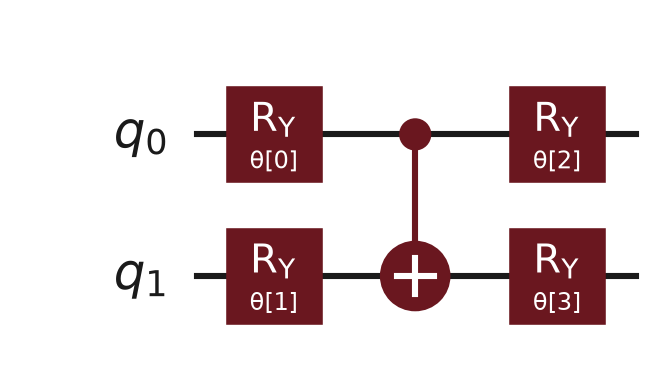
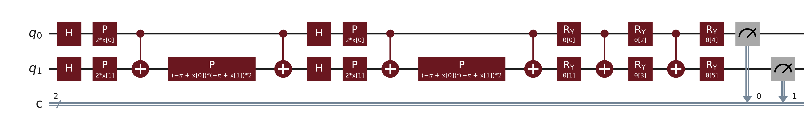
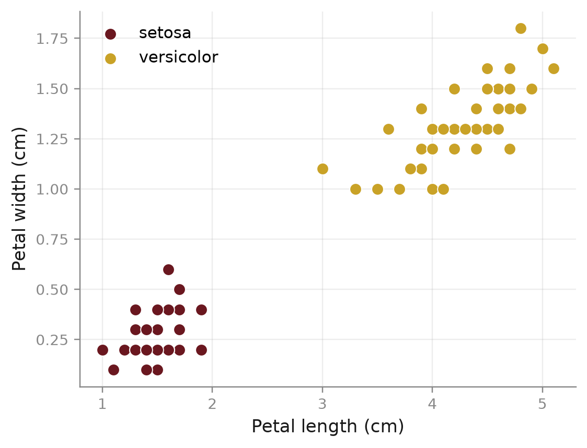

Every circuit on these slides actually runs — the quantum state updates in real time as each stage unfolds.
From superposition to a trained hybrid classifier, one stage at a time.
Review
The Big Picture
If you can understand a pipeline, you can understand QML. Data flows through a series of transformations — just like plumbing. Each stage below opens into what actually happens there.
A small labeled dataset — two classes, two numeric features (e.g. petal length & width).
"win money now"
raw input
extracted feature vector
The extracted counts update as the message changes.
Quantum rotation gates need inputs bounded to [0, 1].
The same x from Normalization now sets a gate angle on the qubit shown here.
Gold gates are fixed by the feature map; the maroon gate's angle θ is what training actually adjusts.
Each shot samples the state produced in Quantum Encoding.
Majority vote says
Whichever outcome measured more often becomes the model's prediction.
The Hybrid Loop
Every stage runs on either classical or quantum hardware — never both.
Scale and vectorize the raw data (CountVectorizer, MinMaxScaler) so every value is bounded and comparable. Ordinary classical code — no quantum hardware involved yet.
A fixed circuit (zz_feature_map) encodes the preprocessed data into qubit rotations. Its angles are set by the data — nothing here is learned.
A trainable circuit (real_amplitudes) is applied right after the feature map. Its rotation angles θ are exactly what training adjusts.
The circuit is sampled many times (shots); the outcome distribution becomes a predicted label — this is the only place where quantum randomness enters the picture.
This is why QML is called hybrid. A classical optimizer (COBYLA) compares the prediction to the true label, then proposes new θ — which feed straight back into stage 3, Ansatz. The loop repeats.
Definitions
Classical ML finds patterns by adjusting trainable parameters. Quantum mechanics offers superposition and entanglement — multiple states processed at once. QML harnesses that power to do the pattern recognition.
Side by Side
| Classical Models | Quantum Models | |
|---|---|---|
| Data Unit | Bits — strictly 0 or 1 | Qubits — 0, 1, or both at once |
| Hardware | Classical processors (silicon) | Quantum circuits |
| Processing | Sequential, deterministic | Superposition & entanglement — many states at once |
This is why QML has so much potential: a quantum processor can evaluate a vast, complex state space all at once.
The Workflow
Scale every raw feature into a bounded range (typically [0, 1]) with something like MinMaxScaler, so the values are safe to feed into a rotation gate.
Run the fixed, non-trainable encoding circuit — e.g. zz_feature_map — that turns each scaled data point into a specific quantum state.
Apply the trainable circuit — e.g. real_amplitudes — whose rotation angles θ are the model's actual learned parameters.
Sample the circuit, turn the outcome distribution into a predicted label, then compare that prediction against the true label to get a loss value.
A classical optimizer (COBYLA) looks at the loss and proposes new values for θ — then the whole workflow repeats from stage 3 until the loss stops improving.
Qiskit's VQC class packages all five stages behind fit(X_train, y_train) / predict(X_test) — mirroring a scikit-learn estimator.
Encoding
Rz(x)·H∣0⟩ rotates the real qubit state below — not a canned picture.
zz_feature_map: H for superposition, then Rz(x) keyed to the feature value.
∣ψ⟩ = 0.707∣0⟩ + 0.707·e^(0.50i)∣1⟩
Mathematically
φ(x)⟩ = Uφ(x) · 0⟩ⁿ
| x | The classical input data |
| n | The number of qubits |
| 0⊗n | All n qubits start at zero |
| Uφ(x) | The data-encoding circuit |
| φ(x)⟩ | The encoded quantum state |
Key distinction: unlike a trainable ansatz, these angles are fixed by the data — not learned.
Uzz(α) = e^(−iα·Z⊗Z)
This gate applies a phase depending on the joint state of two qubits — combined with single-qubit rotations, that is what encodes a relationship between features.
The ZZ Interaction
Each gate applies independently, in either order, to the real 2-qubit state vector on the right.
Both gates on — equal superposition with the ZZ phase pattern applied.
ψ⟩ = 1.00∣00⟩
Bar color: gold = positive phase, maroon = negative phase (the +1/−1 eigenvalue the ZZ gate applies). With H⊗H unchecked, the ZZ phase alone does nothing to ∣00⟩, since it's already a +1 eigenstate.
R_z(x) = e^(−ix·Z/2)
The same Pauli-Z rotation also appears alone, encoding one feature per qubit — the exact ½-factor is a convention, and differs slightly between references.
The Trainable Half
Unlike the feature map, the ansatz's rotation angles are free, trainable parameters — exactly analogous to the weights of a classical neural-network layer.
real_amplitudes: alternates layers of single-qubit Y-rotations with fixed entangling CX gates.
More layers → more trainable parameters, more expressive power — but also a deeper circuit.

The Ansatz
ψ(θ)⟩ = U(θ) · 0⟩
| 0⟩ | The starting state, before any trainable rotation |
| U(θ) | The ansatz circuit, built from rotation gates |
| θ | The trainable parameter vector — what training adjusts |
| ψ(θ)⟩ | The resulting quantum state |
U(θ) = Rᵧ(θ₂) · R_z(θ₁) · Rᵧ(θ₀)
Gates apply right to left: Rᵧ(θ₀) acts on ∣0⟩ first, then R_z(θ₁), then Rᵧ(θ₂). θ = (θ₀, θ₁, θ₂) is the full parameter vector.
Applied to ∣0⟩, this gives the closed form ψ(θ)⟩ = cos(θ/2)∣0⟩ + sin(θ/2)∣1⟩ — the same expression the next slide computes live.
The Ansatz
Ideal-qubit probabilities, computed live from Ry(θ)∣0⟩ — the same matrix the companion notebook uses.
At θ = 2.60 rad, this works out to amplitudes 0.267 and 0.964 — P(0) ≈ 7.2%, P(1) ≈ 92.8%.
The Ansatz
ψ(θ)⟩ = U(θ)·0⟩
The ansatz circuit applied to the starting state.
f(θ) = ⟨ψ(θ)∣O∣ψ(θ)⟩
Measuring an observable O on that state turns the circuit into a prediction.
θ* = argmin L(θ)
Training searches for the parameter vector θ that minimizes the loss.
Everything in this section reduces to these three steps: build the state, turn it into a prediction, then search for the θ that makes the prediction right.
The Two Halves
Training
Step 5 feeds back into step 1 — this is a loop, not a line.
Putting It Together

Every VQC circuit is this same shape: a fixed data-encoding block, a trainable block, then measurement. What changes between problems is which feature map and ansatz — not the overall pattern.
Case Study
Teach a quantum circuit to look at a text message and flag it as spam or not — a small, fully worked example of the same pipeline.
| Message | Label |
|---|---|
| "win money now" | 1 (Spam) |
| "claim your free prize" | 1 (Spam) |
| "meeting at 3pm" | 0 (Not Spam) |
| "project discussion tomorrow" | 0 (Not Spam) |
Preprocessing
Vocabulary: win, money, meeting, tomorrow
[0, 0, 0, 0]
Normalization
Quantum rotation gates need bounded inputs — you cannot rotate a qubit "500 times" and get a meaningful result. Skipping normalization is the #1 reason beginners' QML models fail.
MinMaxScaler output
0.500
Same Shape
From here, it is identical to the numeric pipeline you already built: encode with the feature map, train the VQC with COBYLA, measure, and predict.
Result: "Win money now" → Spam. A toy example — but the pipeline is identical to what a real filter would use.
Modularity
The architecture is completely modular — swap the dataset at the front, keep everything else exactly the same.
Normalize → Encode → Train → Measure
Normalize → Encode → Train → Measure
Real Data
As a harder follow-up: the same pipeline works on versicolor vs. virginica — a non-linearly-separable pair.

Benchmarking
No QML result means anything without a classical point of comparison on the same split. On a small problem like this, expect the classical model to match or beat the quantum one.
Today's QML has no proven advantage on small classical datasets.
The Pragmatic Reality
We are in the NISQ era — Noisy Intermediate-Scale Quantum. Today's processors are brilliant but noisy; we cannot rely on them to do everything.
Classical CPU
Quantum Processor
The CPU handles dataset prep and optimizer logic; the QPU handles state-space calculations — exchanging data, back and forth, continuously.
The Notebook
Open the companion notebook and try it yourself.